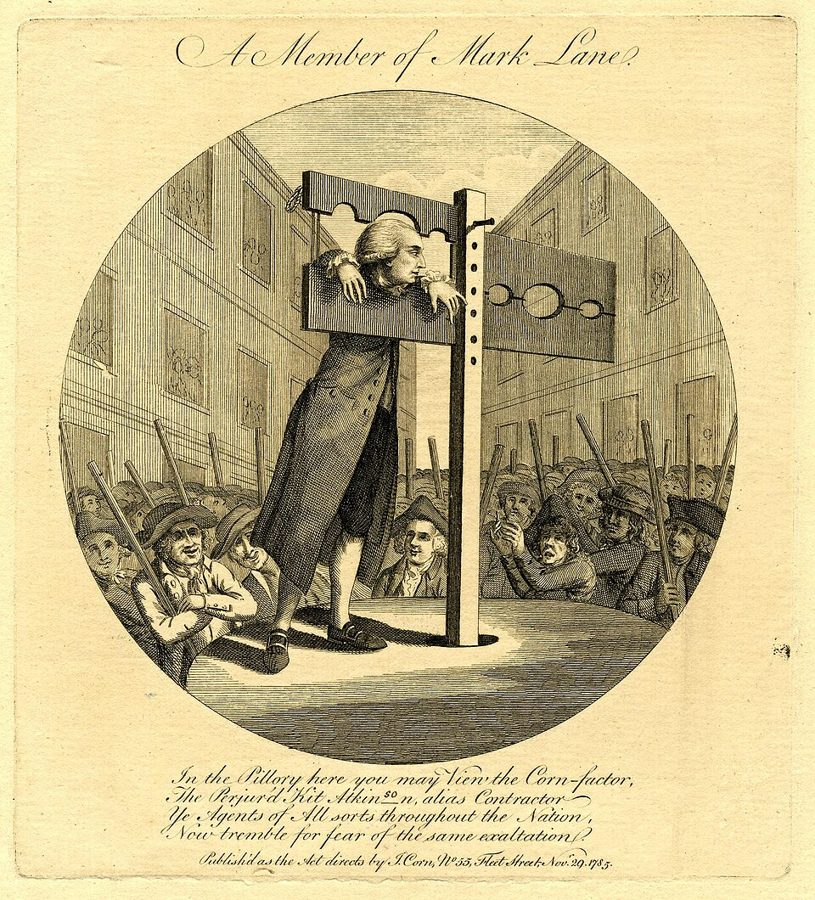
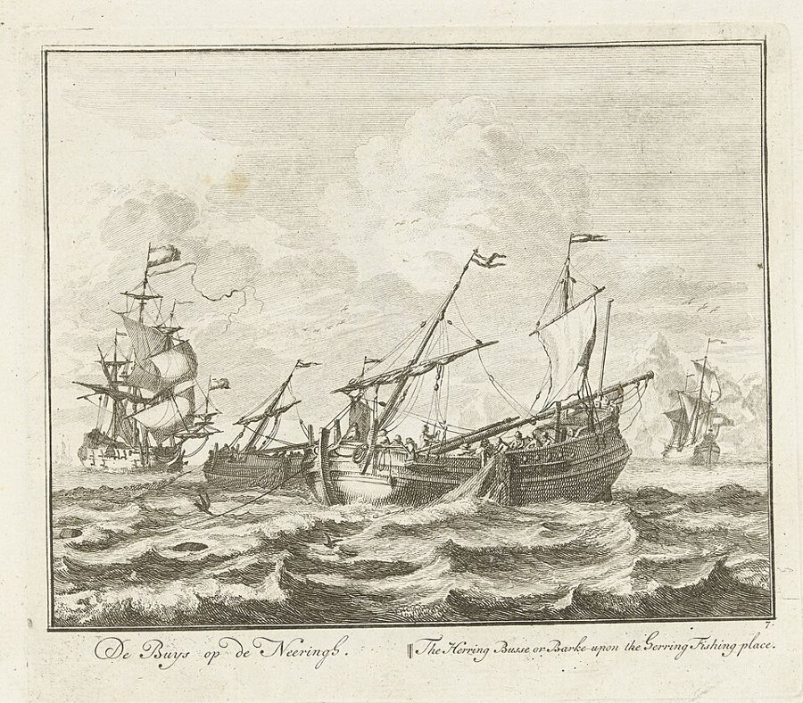

这一页在做什么
这三章讲重商主义推出口的三样办法：出口退税、出口奖金、给某一国特惠的通商条约。斯密只替退税说了好话。重头戏藏在第 5 章末尾一段长长的题外话里：荒年粮价飞涨，百姓骂粮商囤积居奇，各国政府抓人、限价、禁运。斯密偏偏替粮商辩护，还相信饥荒是政府弄出来的。读的时候抓两条线：荒年里价格起什么作用；粮食自由买卖能不能防住饥荒。

他想证明什么
卷四前三章讲重商主义怎样挡进口，这三章讲它怎样推出口（六样手段的全图见页 16）。第 4 章退税：货物出口时，把在国内交过的税退还，斯密说这「似乎最合理」，因为它不把资本拉进哪一行，只是不让税把生意赶走。第 5 章奖金是主菜：只有赔本的买卖才要奖金，奖金把一国的生意逼进不划算的渠道。中间他拿谷物奖金算账，又在 1784 年的第三版里加了一大段苏格兰鲱鱼渔船的故事。章末的题外话是这一页的精华：荒年里粮商为什么是百姓的朋友，饥荒从哪里来，英国富起来靠的是什么。第 6 章拿 1703 年英葡两国的梅休因条约开刀，后半章转去讲铸币税，和条约没有关系。
读法：§4 先读，两千来词。有空读 §5 的爱德华六世法令和巫术的比方、§6 末尾的繁荣真因、§7 的葡萄酒条约。§1、§3、§8 可以跳过。
§3 里斯密说谷物奖金抬不高粮食的「真实价值」，只让白银贬了值。这靠的是页 03 那把劳动和谷物的尺子，今天不这样看：补贴抬高的是谷物比别的东西贵多少，照样会把地和资本拉去种粮。
斯密落在哪：退税可以；奖金和特惠条约都是让多数人掏钱，照顾少数商人。荒年随行就市的粮商不是敌人，他相信是政府的限价、禁运把粮贵变成了饥荒。英国富起来，靠的是人人能安心享有劳动果实，不靠谷物奖金。
分节地图
这一页是卷四第 4、5、6 章，本站切成 8 节。粗体是本站起的节名；「杨译里找」后面是杨译里这一节开头附近的小标题或第一句；灰色的英文是原文这一节开头的几个词。标「先读」的是最短读法。
- 退税为什么算合理商人要求对出口的鼓励MERCHANTS and manufacturers are not contented with …斯密少有的替现行制度说好话：退税只是不让税把生意赶走。后面是旧补助税（一种老关税，不是补贴）、葡萄酒退税的细则，看完第 2 段就可以跳。
- 付钱请外国人来买不能强迫外国人购买我们的货物，因此提议付给他们钱，让他们购买BOUNTIES upon exportation are, in Great Britain, …第 1 段那句挖苦：外国人强迫不了，只好付钱请他们买。第 8 段「两道税」的账值得看，概念块里讲了。
- 谷物奖金和鲱鱼大渔船价格的提高如果是真实价格的提高，那就会鼓励生产，然而那不是真实价格的提高This enhancement of the money price of …第 9–24 段说奖金只让白银贬值，靠的是过时的尺子，可以跳。第 25 段私下凑钱发奖金、第 32–35 段鲱鱼渔船很好看，见故事。
- 饥荒不是粮商造成的关于谷物贸易和谷物法的离题论述I CANNOT conclude this chapter concerning bounties, …全页的先读。第 43 段船长减口粮的比方，第 45–47 段饥荒从哪里来。读时盯住 I believe、perhaps 这些限定词，看他把话说到多满。
- 囤积居奇和猎巫这种群众厌恶又由立法予以助长The ancient policy of Europe, instead of …爱德华六世的法令把买粮转卖当犯罪。第 56 段说法律应当信任人们自己照看自己的利益，第 66 段把怕囤积比作怕巫术。第 68–70 段的比例，斯密自己说不太信。
- 粮食进出口和繁荣的真因Ⅱ．进口商，他的贸易有利于人民，并不真正伤害农场主和乡绅II. The trade of the merchant importer …另外三种粮商。第 79 段承认小国有时得限制出口；第 83–84 段是全章的落点：繁荣在国债之后，国债却不是原因。最后评 1773 年的新谷物法。
- 梅休因条约和葡萄牙黄金通商条约对于受惠国有利WHEN a nation binds itself by treaty …条约全文只有三条，斯密逐条拆。第 12 段说黄金和别的东西一样，有钱就买得到；第 14 段讲 1762 年法、西两国逼葡萄牙赶走英国船。
- 熔币和铸币税为对外贸易而大量输入黄金The great annual importation of gold and …转去讲铸币税和英格兰银行，是货币技术问题，和通商条约没有关系，可以跳过。
先用中文过一遍：这一页的概念
这一页用到的三个概念。讲的是概念本身；每块的「今天」说今天怎么看它。前几页的重商主义、贸易差额在这一页还会出现。
§2出口补贴 bounties upon exportation
政府按出口的数量给出口商发钱，好让本国货在外国卖得比别人便宜。斯密时代英国最有名的一笔是谷物奖金：光荣革命后立的法，小麦每夸特价格不超过 48 先令时，每运出一夸特，国家给 5 先令。斯密说，这等于让百姓交两道税：一道交给国库，再发给出口商；一道是粮食运出去以后国内粮价上涨，人人买面包多付。他算了一笔账：假设奖金让国内麦价每夸特涨 4 先令，出口又只占国内消费的三十一分之一，那么国家每发出 5 先令奖金，百姓在自己吃的粮上就要多付 6 镑 4 先令。译本：「奖金」，就是今天说的出口补贴。
今天：1995 年起，世贸组织的补贴协定禁止工业品的出口补贴；农产品是例外，直到 2015 年内罗毕部长级会议决定取消：发达成员立即取消，发展中成员 2018 年前取消。
在这一页：第 1–8 段立论，第 8 段是两道税的账；第 25 段说按产量发的奖金只有一道税；第 36 段承认帆布、火药这类国防物资的奖金「也许」说得过去。
§4价格的配给作用 by raising the price he discourages the consumption
东西不够分时，总得有个办法定下谁拿多少、什么时候拿：排队、凭票、抓阄、看关系都是办法，价格也是一种。东西少了，价钱上涨，人人掂量着少买、省着用；商人也有动力把货从别处运来，把存货留到最缺的时候卖。荒年的一仓粮食要撑到明年新粮上市。照斯密的说法，粮商抬价抬得恰好，大家正好把口粮均匀摊到一年；抬得太低，前几个月吃得太快，季末就断粮。要分清的是：价格配给不是平均配给，钱少的人省得最多。书里没有专门的叫法，这个名字是本站起的。
今天：今天叫价格的配给作用。限价造成排队和短缺，是教科书的标准结论；可价格按出得起的钱分东西，穷人买不起时，配给就成了挨饿，见「今天怎么看」。
在这一页：第 43 段立论，船长减口粮的比方也在这里；第 47 段讲政府限价的后果；第 65 段再讲一遍：抢购转卖的商人让大家早点感到粮贵。
§7特惠通商条约 treaties of commerce
一国和另一国签约，只给对方的货减税或开禁，对别国照旧。斯密说，受惠国的商人在那里得了「一种垄断」，货卖得多，价钱也好；施惠国的人买外国货，要比各国自由竞争时贵。他也说清了分寸：施惠国多半不是亏本，只是少赚。今天有一对词正好对上：本来从成本更低的国家买的货，因为优惠改从受惠国买，叫「贸易转移」，是经济学家 Viner 1950 年起的名字；优惠让原来进不来的货进来了，叫「贸易创造」。一份优惠协定划不划算，看两者谁大。这个概念名是本站起的。
今天：世贸组织的头一条规矩是最惠国待遇：给一个成员的优惠要给所有成员，正是这一章的反面。但它允许自由贸易区例外，如今通报生效的区域贸易协定约有三百八十个。
在这一页：第 6 章第 1–2 段立论，第 3–7 段拿梅休因条约作例子，第 8–14 段驳「为了葡萄牙的黄金」的说法。
故事和背景
这一页里的故事和 18 世纪的东西，按在书里出现的顺序排。
§3捕奖金，不捕鱼

鲱鱼奖金这十段是斯密在 1784 年的第三版里加的，那时他已在爱丁堡当了几年海关专员，手上有账。奖金按渔船的吨位发，不看捕到多少鱼；他担心不少船出海，为的「不是捕鱼，而是捕奖金」。1759 年每吨奖金 50 先令，那一年整个苏格兰的大渔船队只带回四桶在海上腌好的鲱鱼，光奖金一项，每桶就花了国家 113 镑 15 先令。奖金只给二十到八十吨的有甲板大船，是照荷兰的样子学的；可苏格兰的鲱鱼成群游进海湾，小船捕了就上岸，最合适，没有奖金的小船渔业几乎被挤垮。1750 年还为此办了一家五十万镑的股份公司，到斯密写这段时，大大小小的渔业公司几乎都赔掉了全部或大半本钱。
§4粮仓被抢的粮商
第 48 段写荒年里的粮商：下层百姓把苦日子怪到他的贪心上，他常有粮仓被抢砸的危险。斯密替他算账：他平常和农场主订合同，按每夸特 28 先令上下的平常价收粮，荒年卖得贵得多；可斯密说，这点额外利润只够补上别的时候的损失：这一行发大财的，并不比别的行当多。正因为荒年挨骂，体面又有本钱的人不愿干，剩下磨坊主、面包师、粉商和一些可怜的小贩。史学家 E. P. Thompson 1971 年的名文《18 世纪英国群众的道德经济》专讲这类骚乱：百姓心里有一套「公道价」的老规矩，砸粮仓、逼粮商按公道价卖，是在执行这套规矩，不是乱抢。斯密这段题外话，代表的正是和它针锋相对的新学说。
§5囤粮的人和女巫
爱德华六世 1552 年的法令（第 50 段）规定：买进谷物再转卖，就算非法囤积。初犯坐牢两个月，没收粮价那么多的钱；再犯坐牢六个月，罚双倍；三犯上枷示众，关多久看国王高兴，家产全部没收。斯密在第 66 段说，人们对囤积和抢购转卖的恐惧，和对巫术的恐惧是一回事，被告的人同样无辜。停止追诉巫术的法律一出，这种恐惧和猜疑似乎就消了；他说放开国内的粮食买卖，大概也能这样消掉对囤积的恐惧。这条法律是 1736 年起施行的，它让不列颠不再审判女巫。这个比方在当时并不遥远：据说不列颠最后一个被处死的「女巫」，1727 年（一说 1722 年）在苏格兰北部的多诺赫被烧死，正是斯密出生前后。
§7葡萄酒换呢绒
1703 年 12 月，英国驻葡萄牙的使节 John Methuen 签下这份商约。全文只有三条，斯密照录在第 4–6 段：葡萄牙照禁令以前的条件放进英国呢绒；英国对葡萄牙酒征的税，永远比法国酒少三分之一；第三条只管批准。斯密的账是：葡萄牙并没有给英国呢绒比法国、荷兰更好的待遇，英国却给了葡萄牙酒特惠，所以这份条约「显然」对葡萄牙有利。当时的人照样把它夸成英国商业政策的杰作，因为巴西的黄金经葡萄牙流进英国（里斯本运金子的邮船，见页 16）。后来英国人爱喝葡萄牙的波特酒，常被归功于这份条约。一百多年后，李嘉图 1817 年讲比较优势，用的例子正是英国呢绒换葡萄牙葡萄酒。
原典：斯密的原话
这本书是公版书，下面整段放斯密的原文，配本站的白话译。灰字说它在杨译的哪里，最后一行是这段里今天容易读错的 18 世纪词。
§4船长减口粮
题外话的核心，略去中间讲抬价过高、过低各有什么后果的几句。在杨译Ⅰ．国内商人的利益和人民利益相同，消费应与能得到的供给成比例这个小标题前后的那一大段。
The interest of the inland dealer, and that of the great body of the people, how opposite soever they may at first sight appear, are, even in years of the greatest scarcity, exactly the same. It is his interest to raise the price of his corn as high as the real scarcity of the season requires, and it can never be his interest to raise it higher. By raising the price he discourages the consumption, and puts every body more or less, but particularly the inferior ranks of people, upon thrift and good management. … Without intending the interest of the people, he is necessarily led, by a regard to his own interest, to treat them, even in years of scarcity, pretty much in the same manner as the prudent master of a vessel is sometimes obliged to treat his crew. When he foresees that provisions are likely to run short, he puts them upon short allowance. Though from excess of caution he should sometimes do this without any real necessity, yet all the inconveniencies which his crew can thereby suffer are inconsiderable, in comparison of the danger, misery, and ruin, to which they might sometimes be exposed by a less provident conduct.
本站译：国内粮商的利益和广大百姓的利益，乍看再对立，即便在最大的荒年，也完全一致。他的利益在于把粮价抬到这一季真实的短缺所要求的高度，再高就绝不可能合他的利益。抬了价，就压住了消费，让每个人多少都节省着、精打细算地过日子，下层百姓尤其如此。……他并没有打算照顾百姓的利益，却必然被自己的利益引着，即便在荒年，也像一位谨慎的船长有时不得不对待船员那样对待百姓：船长预见到粮食可能不够，就给大家减口粮。哪怕他有时太过小心，其实没有必要也减了，船员因此受的那点委屈，比起船长不够未雨绸缪时他们可能遭遇的危险、苦难和灭顶之灾，也算不了什么。
「并没有打算……却必然被自己的利益引着」和页 17 的看不见的手是同一个句式，只是这里没有那几个字。船长的比方好记，也藏着一处不同：船上的口粮按人头分，市场上的粮按钱分，见「今天怎么看」。
- inland dealer国内粮商，区别于做进口、出口、转运的粮商
- inferior ranks社会地位低的人，18 世纪的常用说法
- master of a vessel船长
- short allowance减量的口粮配给
§4歉收和饥荒
全书最常被引用、也最常被说过头的一段，接着取第 46 段的开头和结尾。在杨译粮食不足从来没有大到足以造成饥荒这个小标题前后。
Whoever examines, with attention, the history of the dearths and famines which have afflicted any part of Europe, during either the course of the present or that of the two preceding centuries, of several of which we have pretty exact accounts, will find, I believe, that a dearth never has arisen from any combination among the inland dealers in corn, nor from any other cause but a real scarcity, occasioned sometimes, perhaps, and in some particular places, by the waste of war, but in by far the greatest number of cases, by the fault of the seasons; and that a famine has never arisen from any other cause but the violence of government attempting, by improper means, to remedy the inconveniencies of a dearth. In an extensive corn country, between all the different parts of which there is a free commerce and communication, the scarcity occasioned by the most unfavourable seasons can never be so great as to produce a famine … The drought in Bengal, a few years ago, might probably have occasioned a very great dearth. Some improper regulations, some injudicious restraints imposed by the servants of the East India Company upon the rice trade, contributed, perhaps, to turn that dearth into a famine.
本站译：欧洲各地在本世纪和前两个世纪遭过的歉收和饥荒，其中好几次我们有相当准确的记载。谁要是留心考察这段历史，我相信都会发现：歉收从来不是国内粮商串通造成的，除了真实的短缺，也没有别的原因；短缺有时也许在某些地方是战争的破坏造成的，但绝大多数是天时不好。而饥荒从来没有别的原因，只是政府动用强力，想用不适当的手段去补救歉收带来的困苦。一个产粮大国，只要国内各地之间自由通商、往来便利，再坏的年景造成的短缺，也绝不可能大到酿成饥荒。……几年前孟加拉的旱灾，大概本会造成一场很严重的歉收。东印度公司的职员对稻米买卖定下的一些不当规定、一些欠考虑的限制，或许促成了这场歉收变成饥荒。
限定词都在：I believe；只说欧洲、只说近三百年；「绝不可能」只说国内自由流通的产粮大国。略去的几句说，种稻的国家旱灾更可怕，但只要政府允许自由贸易，「或许」也几乎不会普遍到非闹饥荒不可。孟加拉那次，他用了 probably 和 perhaps。
- dearth歉收、粮贵：粮食短缺，但还没有成批饿死人
- famine饥荒：成批饿死人。斯密的论证全靠这两个词的区别
- combination串通、结成同盟（抬价或压价）
- violence强力、强制，不一定是动武
- servants这里指东印度公司的雇员、职员，不是仆人
§6繁荣的真因
题外话的落点，取第 83 段的后半和第 84 段。在杨译大不列颠的繁荣不是由于谷物奖金，而是由于享有劳动果实的安全这个小标题前后。
That security which the laws in Great Britain give to every man that he shall enjoy the fruits of his own labour, is alone sufficient to make any country flourish, notwithstanding these and twenty other absurd regulations of commerce; and this security was perfected by the revolution, much about the same time that the bounty was established. The natural effort of every individual to better his own condition, when suffered to exert itself with freedom and security, is so powerful a principle, that it is alone, and without any assistance, not only capable of carrying on the society to wealth and prosperity, but of surmounting a hundred impertinent obstructions with which the folly of human laws too often incumbers its operations; though the effect of these obstructions is always more or less either to encroach upon its freedom, or to diminish its security. … Though the period of the greatest prosperity and improvement of Great Britain, has been posterior to that system of laws which is connected with the bounty, we must not upon that account impute it to those laws. It has been posterior likewise to the national debt. But the national debt has most assuredly not been the cause of it.
本站译：不列颠的法律保证每个人都能享有自己劳动的果实，单这一条，就足以让任何国家繁荣，哪怕还有这些以及另外二十条荒唐的商业规章；而这种保障是在那场革命时才完备的，差不多正是奖金设立的时候。每个人改善自身处境的自然努力，只要能自由、安全地施展，就是一股极强的力量：单凭它自己，不借任何帮助，不仅能把社会带向富裕繁荣，还能越过人类法律的愚蠢常常给它设下的上百种多管闲事的障碍；不过这些障碍多少总要损害它的自由，或者削弱它的安全。……不列颠最繁荣、改进最大的时期，虽然在与奖金相关的那套法律之后，我们却不能因此把功劳记在那套法律头上。这个时期也在国债之后，可国债肯定不是它的原因。
最后三句是「先后不等于因果」的好例子：两件事一前一后，不等于前一件造成了后一件。斯密拿国债作反证，因为他不信国债能带来繁荣，卷五最后一章说它正压在欧洲各大国身上。前面那句「越过上百种障碍」常被单独引用，后半句的「不过」别漏掉。
- the revolution1688 年的光荣革命，不是法国大革命
- impertinent多管闲事、不相干又碍事的，不是「无礼」
- incumbers拖累、妨碍，encumbers 的旧拼法
- posterior在……之后
译本勘误
杨译这三章整体可靠。下面只收会把人读歪的四处。灰字是英文原文那一处的几个词；方框里是杨译的原句，在电子书里搜它。
§5这里的「垄断」是抢购转卖术语
popular fear of engrossing and forestalling
译本：「一般人对囤积和垄断的恐怕」
forestalling 指抢在粮食进市场之前，或在市场上买下，不久在同一市场转卖。杨译这几段一律作「垄断」，第 65、66 段附近的小标题也是。全书别处的「垄断」是 monopoly，斯密骂得最狠；读成他说怕垄断没道理，就全反了。他辩护的是抢购转卖的小粮商。
§6西葡的商业规章是假设「就算明智」误译
were as wise as the greater part
译本：「却也有贤明的地方」
原文是个假设：就算两国的商业规章大多是明智的（实际上大多荒唐愚蠢），单是两国的政府和教会，也足以让它们一直穷下去。杨译成规章里也有明智之处，丢了假设，也就丢了这段的论点：自由和安全比商业规章要紧。
§7赔本的是靠奖金的生意译反
as in the case of bounties
译本：「也不会像在没有奖金的情况下」
原文说：吃了特惠条约亏的国家，卖货虽然便宜些，大概不会低于成本，也不会像靠奖金撑着的生意那样，卖价收不回本钱和利润。杨译多了「没有」二字，意思正好反了。上一章的论点恰恰是：只有赔本的生意才要奖金。
§7梅休因是签约的人，不是译者误译
concluded in 1703, by Mr. Methuen
译本：「在1703年由梅休因先生翻译的通商条约」
原文是「1703 年由梅休因先生缔结」。John Methuen 是英国派驻葡萄牙的使节，条约是他谈成、签下的。条约叫「梅休因条约」，就是因为他。
今天怎么看
这一章的主要说法和今天的判断。每条标签判的是那条论点，五种标签的意思：
- 成立今天的经济学和证据支持这句话。
- 部分成立大方向对，细节或适用范围要改。
- 过时说的是 18 世纪的世界，当时也许对，今天的制度和技术已经变了。
- 被推翻后来的经济学或证据说明它错了。
- 有争议经济学界至今没有定论，两边各有代表性的研究。
出口奖金让百姓交两道税，把生意逼进赔本的渠道
只有卖价收不回成本和利润的生意才要奖金（第 2–3 段）；国库付一道，国内涨价再付一道（第 8 段）。他留了口子：国防要用的帆布、火药「也许」说得过去（第 36 段）。今天看，这条成立：世贸组织 1995 年起禁止工业品出口补贴，2015 年的内罗毕会议决定连农产品出口补贴也取消。
§2 §3 第 2–3、8、36 段荒年里粮商的利益和百姓完全一致，他涨价等于替大家配给口粮
抬价过高，粮会剩在手里贱卖；抬得不够，百姓季末挨饿，所以他的利益是按真实的短缺定价（第 43 段）。粮商人多又分散，串通不起来（第 44 段）。今天看，价格确实在配给，但「完全一致」有争议：价格也可能被恐慌推过头，两边的研究见下面的对照卡。
§4 第 43–44 段粮食贸易完全自由，是防止饥荒唯一有效的办法
斯密相信，近三百年欧洲的饥荒都是政府闹出来的（第 45–47 段），也承认小国有时得限制出口（第 79 段）。今天看，限价、禁运把粮荒变成饥荒，历史上一再发生；可「唯一」说过头了：森的研究说明，粮食总量没怎么少也会闹饥荒，穷人没钱买粮时，光靠市场救不了，见下面的看法块。
§4 §6 第 45–47、79 段给某一国特惠的通商条约，对受惠国商人有利，对施惠国不利
施惠国买外国货比自由竞争时贵，多半不是亏本，只是少赚（第 1–2 段）；梅休因条约里英国给了葡萄牙酒特惠，英国呢绒却没换到比别国更好的待遇（第 7 段）。今天看，这正是 Viner 讲的「贸易转移」；可优惠也会让原来进不来的货进来，叫「贸易创造」，所以优惠协定划不划算要看两者谁大。
§7 第 1–2、7 段书里的说法：荒年里粮商的利益和百姓完全一致，他会按真实的短缺定价
- 书里
- 第 43 段；第 65 段又说，判断对了的抢购转卖者是让大家早一点感到粮贵，免得后来更苦。
- 当时
- 荒年常有粮食骚乱，法律长期把囤积、抢购转卖当罪（见故事）。斯密是在和整套老规矩唱反调。
- 今天
- 支持斯密的一边：经济史家 Ó Gráda 2005 年分析前工业时代欧洲四场饥荒里粮价在各地、各月的变动，结论是危机中市场照常运转。经济学家也大多不赞成荒年限价：2012 年芝加哥大学 IGM 专家调查问康涅狄格州该不该禁止灾害期间「过分」涨价，赞成的 8%，反对的 51%。另一边：Ravallion 1987 年研究 1974 年孟加拉国饥荒，强调存粮的人怎样预判未来的短缺，对米价起了关键作用；Quddus 和 Becker 2000 年用每周米价检验，认为投机泡沫可能直接加重了那场饥荒。商人判断对时斯密说得对；大家一起判断错时，价格会涨过真实的短缺。核对于 2026-10。依据：Ó Gráda, Markets and Famines in Pre-Industrial Europe, Journal of Interdisciplinary History, 2005；IGM Forum 2012 年的调查（Econlib 转述）；Ravallion, Markets and Famines, 1987；Quddus & Becker, Journal of Economic Development, 2000。
斯密说饥荒都是政府造成的吗
主流看法：阿马蒂亚·森 1981 年的《贫困与饥荒》指出，饥荒常常不是粮食总量不够，而是一部分人买粮的「权利」垮了：丢了活计，工钱追不上粮价。1943 年的孟加拉，粮食产量比前一年少，却比几个没闹饥荒的年份还多，死了几百万人。森 1986 年还专门谈过斯密：英帝国的许多次饥荒里，官员拿斯密当不出手的理由，他说那是读错了斯密。
斯密的看法：第 45 段说饥荒只来自政府用不当手段补救歉收（I believe）；第 46 段说孟加拉（1770 年那次）的限制「或许」促成了饥荒。可卷一第 8 章第 26 段（页 05），他对同一场孟加拉饥荒给过另一种解释：养活劳动贫民的那笔钱在飞快缩水，找不到活的人只能饿死。那里讲的是收入，不是粮食。
本站的评论：两处放在一起读，斯密比他最出名的那句话更接近森。第 45–47 段讲的是粮食怎样在一国之内流动，限价、禁运一再把粮荒变成灾难，这一点他说对了。可自由买卖只管粮食流向出得起钱的地方，管不了没钱的人。森说，照斯密的思路，荒年真正的问题不是政府该不该出手，而是发钱还是发粮。拿斯密当袖手旁观的理由，是把他读窄了。
本站的总体看法：这一页最值得读的是 §4 那八段：荒年里价格怎样配给口粮，斯密讲得比许多教科书生动。读到「饥荒只来自政府」时，记得他在卷一讲过收入垮掉也会饿死人。奖金和条约的道理今天大体成立，细账都可以跳过。
精彩回顾
隔几周回来时看这里。想不起来，点节号回到那一节。
一句话：付钱请外国人买东西是赔本买卖；荒年涨价的粮商是在替大家配给口粮，可市场只把粮卖给买得起的人。
荒年粮商涨价，像船长预见到粮食不够就减口粮：大家早点省着吃，季末才不断粮。斯密说粮商和百姓的利益在荒年也一致。
§4苏格兰的鲱鱼奖金按船的吨位发。1759 年全苏格兰的大渔船只带回四桶鱼，每桶光奖金就花了国家一百多镑。
§3斯密说怕囤积就像怕巫术，被告的人同样无辜；不再追诉巫术，猎巫就停了，放开粮食买卖大概也会这样。
§5英国的繁荣在谷物奖金之后，也在国债之后；可谁也不会说是国债带来了繁荣。先后不等于因果。
§6